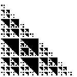
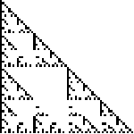
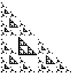
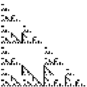
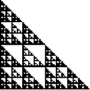
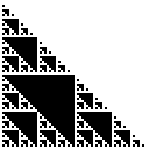
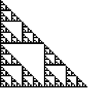

1. (mod 4) Shading the boxes of Pascal's triangle with numbers congruent to
|  |  |  |  |
| 0 (mod 4) | 1 (mod 4) | 2 (mod 4) | 3 (mod 4) |
|  |  |  |
| 1, 2, or 3 (mod 4) | 0 or 2 (mod 4) | 1 or 3 (mod 4) |
| Note that |
| Under the isomorphism |
| Note that |
Return to Other Mod Exercises.